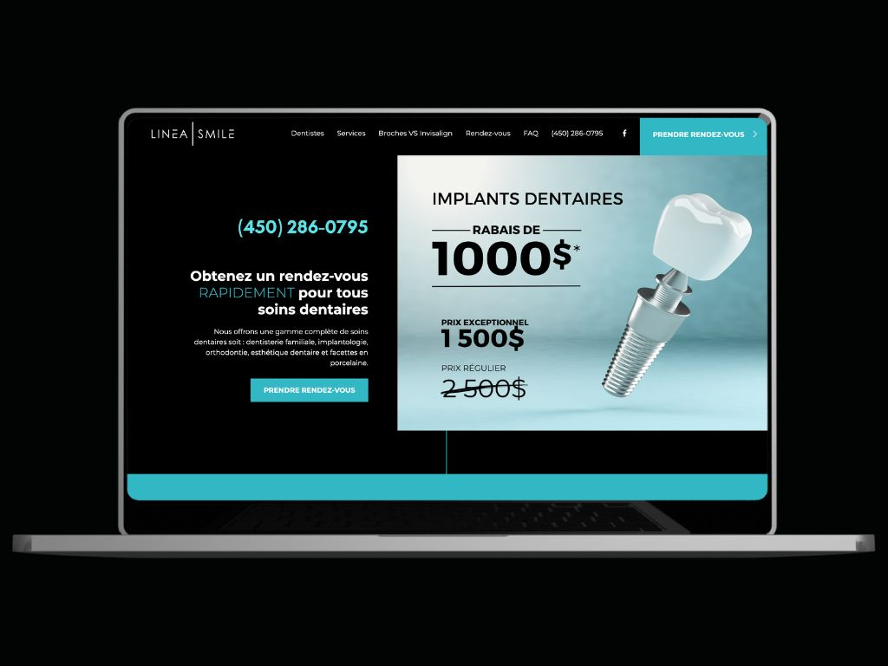

<div class="load-data">
  <div class="popup-main-content">
    <div class="container">
      <div class="row">
        <div class="col-md-12">
          <div class="portfolio-details-title">
            <h2>Website - Linea Smile</h2>
          </div>
          <!-- /portfolio-details-title -->
        </div>
        <div class="col-lg-12">
          <div class="portfolio-details-media">
            <div class="row">
              <div class="col-lg-12 col-md-6">
                <a href="https://lineasmile.com/" target="_blank">
                  
                </a>
              </div>
            </div>
          </div>
        </div>
        <div class="col-lg-6">
          <div class="portfolio-details-info">
            <div class="tags">
              <span>Client : </span> Linea Smile - Dr. Elie Sabbah
            </div>
            <div class="tags"><span>Category : </span> Website</div>
            <div class="tags"><span>Date : </span> 30/January/2022</div>
            <div class="tags">
              <span>Website: : </span>
              <a href="https://lineasmile.com/" target="_blank"
                >www.lineasmile.com</a
              >
            </div>
          </div>
          <!-- /portfolio-info -->
        </div>
        <div class="col-lg-6 mt-40 mt-lg-0">
          <p class="portfolio-description lh-fix">
            I began this project with a clean slate, creating everything from
            the ground up, including
            <strong>content, name, logo, colors, and website.</strong> You'll
            likely notice that the call-to-action is prominently displayed on
            the top right corner as well as you scroll and navigate on the
            website. Optimized for functionality in terms of UX/UI with a fully
            responsive design you can use on any mobile, tablets or laptop.
          </p>
          <!-- /portfolio-description -->
          <p class="portfolio-description mt-30">
            The client wanted dark colors for the branding of his new clinic. I
            managed to stay in his color preferences without altering the
            overall design.
          </p>
          <!-- /portfolio-description -->
        </div>

        <div class="col-md-12">
          <div class="portfolio-details-nav d-flex justify-content-between">
            <div>
              <a class="portfolio-link" href="portfolio-details-05.html"
                >Previous Project</a
              >
            </div>
            <div>
              <a class="portfolio-link" href="portfolio-details-07.html"
                >Next Project</a
              >
            </div>
          </div>
          <!-- /portfolio-details-nav -->
        </div>
      </div>
    </div>
  </div>
</div>
